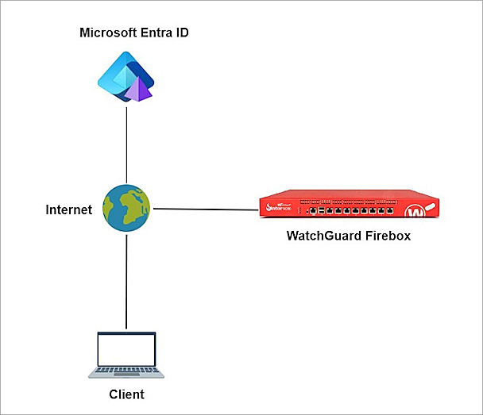

Deployment Overview
The SAML authentication server in Fireware 12.11 or higher can integrate with several services. After you configure the SAML authentication server on the Firebox, you can use it to integrate with the Access Portal.
This integration guide describes how to configure SAML authentication through the Access Portal with Microsoft Entra ID (formerly known as Azure Active Directory) as the Identity Provider. When you configure Single Sign-On to use SAML authentication, users can log in through a single portal and have access to multiple services.
For information about the integration end result, go to the Test the Integration section.
Contents
Integration Summary
The hardware and software used in this guide include:
- Azure portal administrator credentials
- WatchGuard Firebox:
- Fireware v12.11 or higher
- Feature key with an Access Portal license
- A fully qualified domain name (FQDN) that can resolve the external IP address of Firebox
Additional charges might apply for the use of Microsoft Entra ID.
Test Topology
Microsoft Entra ID communicates with various cloud-based services and service providers with the SAML protocol. This integration uses Microsoft Entra ID to communicate with a WatchGuard Firebox over a public Internet connection.

The Access Portal is a subscription service. Before you can enable the Access Portal feature and configure it on your Firebox, you must add an Access Portal license to your Firebox feature key.
Enable the Firebox SAML Authentication Server
To enable the Firebox SAML authentication server:
- Log in to Fireware Web UI at:
https://<your Firebox IP address>:8080 - From the left navigation, select Authentication > Servers.
- Select SAML.
The SAML settings page opens. - Select Enable SAML.
- In the IdP Name text box, type a name for the identity provider. In our example, we type Entra_ID_SAML.
- In the Host Name text box, type an FQDN that resolves to the Firebox external interface.
- Keep the IdP Metadata URL text box blank for now, we add the IdP settings later.
- Click Save.


Configure the Access Portal
To configure the Access Portal on your Firebox:
- Log in to Fireware Web UI.
- From the left navigation, select Subscription Services > Access Portal.
The Access Portal page appears with the Applications tab selected by default. - Select the Enable Access Portal check box.
- Select the User Connection Settings tab.
- In the Authentication Servers section, from the Authentication Servers drop-down list, select the SAML authentication server you configured. For our example, we select Entra_ID_SAML.
- Click Add to add it to the Authentication Servers list.
- Click Save.
- Copy the SP metadata URL, then click Done.
- Open a web browser and go to the SP metadata URL at:
https://[Host name or Firebox IP address]/auth/saml
If you configure an Access Portal port other than 443, you must navigate to
https://<Firebox interface IP address>:<custom port number>/auth/saml
The configuration instructions page appears.Several Firebox features use SSL/TLS for secure communication. For more information, go to Shared Settings and Policy.
- Make sure you have this SP information from Option 2. You use this information when you configure Entra ID:


Configure Microsoft Entra ID
To configure Microsoft Entra ID, complete these steps:
Create a Microsoft Entra ID Group and User
To create a group in Microsoft Entra ID:
- Log in to the Azure portal with your Microsoft Azure account credentials.
- Click Microsoft Entra ID.
- From the left navigation, click Manage > Groups.
- Click New Group.
- From the Group Type drop-down list, select Security.
- In the Group Name text box, type a descriptive group name. For our example, we type access_portal_group.
- From the Membership Type drop-down list, select Assigned.
- Keep the default values for other settings.
- Click Create.

To create a user in Microsoft Entra ID:
- Log in to the Azure portal with your Microsoft Azure account credentials.
- Click Microsoft Entra ID.
- From the left navigation, click Manage > Users.
- Click New User > Create new user.
- From the Basics tab, provide the user information.
- From the Assignments tab, click Add Group to assign the user to the group you created.
- Click Review + Create.
- Click Create.


Configure a SAML Application
To configure a SAML application in Microsoft Entra ID:
- Log in to the Azure portal with your Microsoft Azure account credentials.
- Click Microsoft Entra ID.
- From the left navigation, click Manage > Enterprise applications.
- Click New Application.
- Click Create your own application.
- In the What's the name of your app? text box, type a descriptive name. For our example, we type Firebox Access Portal SAML.
- For What are you looking to do with your application?, select Integrate any other application you don't find in the gallery (Non-gallery).
- Click Create.
- From the left navigation, click Manage > User and Groups.
- Click Add user/group.
- From Users and groups, click None Selected to assign users and groups to this application. For our example, we select the group we created.
- Click Select.
- Click Assign.
- From the left navigation, click Single sign-on.
- For Select a single sign-on method, select SAML.
- From Basic SAML Configuration, click Edit.
- Specify these settings:
- Click Save, then close the Basic SAML Configuration page.
- In theTest Single sign-on dialog box, click No, I'll test later.
- In the Attributes & Claims section, click Edit.
- Click Add a group claim to configure the group authentication for the Access Portal.
- For Which groups associated with the user should be returned in the claim?, select Groups assigned to the application.
- From the Source attribute drop-down list, select Cloud-only group display names.
- Click to expand the Advanced options, then select Customize the name of the group claim.
- In the Name (required) text box, type memberOf.
- Click Save, then click
 to close the Attributes & Claims page.
to close the Attributes & Claims page. - For the SAML Certificates section, copy the App Federation Metadata Url. You need this URL to complete the SAML authentication server configuration on the Firebox.
- From the left navigation, click Security > Token Encryption.
- Click Import Certificate, then select the certificate you downloaded in the previous section.
- Click
 , and click Activate Token Encryption Certificate.
, and click Activate Token Encryption Certificate. - From the Activate Token Encryption Certificate dialog box, click Yes.


Identifier (Entity ID)
https://<your host name>/auth/saml
The name on the WatchGuard Firebox SAML 2.0 Configuration page is SAML Entity ID.
Reply URL (Assertion Consumer Service URL)
https://<your host name>/auth/saml/acs
The name on the WatchGuard Firebox SAML 2.0 Configuration page is Assertion Consumer Service (ACS) URL.
Logout Url (Optional)
https://<your host name>/auth/saml/sls
The name on the WatchGuard Firebox SAML 2.0 Configuration page is Single Logout Service (SLS) URL.


Complete SAML Authentication Server Setup
From Fireware Web UI:
- Log in to Fireware Web UI:
https://<your Firebox IP address>:8080 - From the left navigation, select Authentication > Servers.
- Select SAML.
- In the IdP Metadata URL text box, paste the value of the App Federation Metadata Url you copied from the previous section.
- Click Save.

Complete Firebox Access Portal Setup
From Fireware Web UI:
- Log in to Fireware Web UI.
- From the navigation, select Subscription Services > Access Portal.
The Access Portal page appears with the Applications tab selected by default. - If you do not have any applications in the Access Portal, follow steps 4-7 to add a web application to the Access Portal. To learn how to add other applications to Access Portal, go to Configure the Access Portal.
- Click the Add drop-down list and select Web Application.
- In the Name text box, type a description name.
- In the URL text box, type a URL address.
- Click OK.
- Click Save.
- From the left navigation, select Authentication > Users and Groups.
- Click Add.
The Add User or Group page appears. - For Type, select Group.
- In the Name text box, type a name for the group. The group name must be the same as the group name you create and assign to the SAML application in Microsoft Entra ID.
- From the Authentication Server drop-down list, select the authentication server where the user or group is a member.
- Click OK.
- Click Save.
- From the left navigation, select Subscription Services > Access Portal, then select the User Connection Settings tab.
- In the User Access section, select Specify the applications available to each user and group, then click Add.
The Add User or Group page opens. - From the Authentication Server drop-down list, select the authentication server.
- From the Type drop-down list, select Group.
- In the Name text box, type the group name. The group name must be the same as the group you created.
- Select the applications that are available to this group.
- Click OK.
- Click Save.


For the remainder of this section, we include the steps to configure group or user authentication. If you allow all applications to be available to all users and groups that authenticate with the Access Portal, go to the test section.
You can add a user for user authentication or a group for group authentication. In our example, we add a group for group authentication. If you want to add a user, the user name must be the same as the user name in Microsoft Entra ID.


Test the Integration
To test the integration of Entra ID SAML authentication with the Access Portal:
- From a web browser, go to the Access Portal URL at:
https://<Host Name or IP address>
The log in page appears with the SAML portal you configured as an option. - To log in, click the name of the SAML portal. In this example, we click Entra_ID_SAML.
- On the Microsoft Sign in page, type the Microsoft Entra ID user name, and click Next.
- Type the Microsoft Entra ID user password, and click Sign In.
- Click Yes to stay signed in.


After a successful authentication, a user can access the resources.